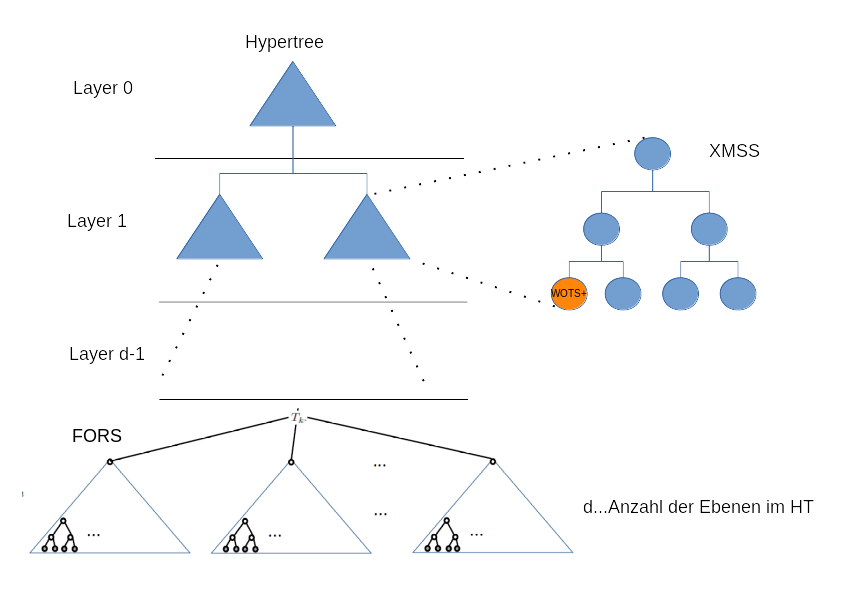

The JCT online help about SPHINCS+ is divided into three parts:
The SPHINCS+ method consists of several algorithms. These are explained here first and then follows the process and the Relationship between the elements.
FORS is the abbreviation for "Forest of random subsets". FORS is a "few-times signature scheme". It's an improvement from HORST, which is a variant of HORS. For the safety of FORS it is important that it gets the output of a hash function as input.
FORS uses the parameters k and t (t = 2a). It signs strings of length k * a.
The secret key consists of k * t random strings of byte length n. The keys are grouped in k groups each with t elements. The character strings are generated pseudorandomly using the secret key SK.seed.
A public FORS key is a hash value of length n which is calculated from a hash of the root nodes of the k binary trees.
Each of the binary trees has a height a and is used to authenticate t secret keys of the k groups.
A FORS signature consists of k secret key elements and the authentication path.
To compute a FORS signature, the message hash (md, message digest) is
divided into k bit strings of length a. Note that a is the
number of bits. The bit strings then are interpreted as a number
between 0 and t-1.
To a secret To obtain keys, the sets are sequentially selected and
the sets become the secret key with the calculated index selected.
The authentication path is calculated by always using the opposite node is selected.

The parameters used are:
The function FORS-TreeHash calculates the nodes of length n. The function works much like the TreeHash function of the Merkle tree. It is assumed that 2% 2 z = 0, since otherwise the TreeHash algorithm would calculate nodes which are not in the tree.
A FORS signature consists of k parts, with each part being a secret
key is n bytes and the associated authentication path with ld (t) * n
bytes.
The key generation can be split up into several
steps:
A signature has the following scheme:
| Private key value (tree 0) (n bytes) |
| Authentication path (tree 0) (log t * n bytes) |
| . . . |
| Private key value (tree k-1) (n bytes) |
| Authentication path (tree k-1) (log t*n bytes) |
In SPHINCS+ the signature is implicitly compared. A FORS signature is used to calculate a public FORS key. This key will then be used in the further calculation of the XMSS tree and thus implicitly compared. So there is no function "fors_verify" (direct counterpart to "fors_sign"), but only "fors_pkFromSig".
The function takes the following parameters:
First, the roots of the k binary trees are calculated using TreeHash. After that, the roots are hashed using the customizable hash function Tk.
The algorithm has the following scheme:
WOTS+ describes a procedure for any message sign. The private key may only be signed once be used. If a key is used twice, it will Procedure uncertain.
WOTS+ uses the following parameters:
The number of elements in a WOTS+ signature, a public key and a
private key can be expressed by the following formula:
len = len1 + len2 with:
len1 = ceil(n / log (w))
len2 = floor(ld (len1 (w-1)) / ld (w)) + 1
The WOTS+ chain function calculates an iteration of the hash function F over the n-byte input string by using ADRS and PK.seed.
The parameters used are:
Run:
A WOTS+ signature is an array of length len, with each one Field is a
string of length n bytes. The signature is generated by converting the
message into numbers from 0 to w-1 becomes. Then the base of the
numbers is changed to w (length len1). A checksum over M
is calculated and also based on w converted (length len2).
The checksum can achieve a maximum value of len1 *
(w-1) * 28.
Each the numbers to the base w are
used around a node of one to use another hash chain. The signature
arises from the Joining the different nodes. The parameters are the
Message M, SK.seed, PK.seed, ADRS.
Run:
Like FORS, there is no direct function to Verify WOTS + signatures. There is only one function, which extracted the public key from a signature, which then is implicitly verified.
The calculation starts with the calculation of the remaining chain, starting with the values at the base of the message hash and the Checksum. These values are in the signature. In SPHINCS+ the Verify the calculated key using the calculation of the public SPHINCS+ key.
The following parameters are used:
The process of calculating the public key is the same like the creation of a signature. The only difference is that not the signature itself is returned, but the generated one public keys. The key is called by calling a Hash function with the parameters PK.seed, the address of the public key generated by WOTS+ and the output of the chain function.
XMSS stands for "eXtended Merkle Signature Scheme", which is the WOTS+ is connected to a binary hash tree. There will be 2h' WOTS+ public keys authenticated by means of the binary tree that has a height of h'. So every XMSS key pair of height h' can be used to sign 2h' different messages.
An XMSS signature contains the WOTS+ signature from the message and the authentication path. The path is a vector of nodes, which at verification, calculating the root, starting from the WOTS+ signature, allowed.
XMSS uses the following parameters:
In SPHINCS+, a secret XMSS key is the SK.seed, which contained in the secret SPHINCS+ key. He is used around to generate a secret WOTS+ key.
For the calculation of the internal nodes of the Merkle tree, which n bytes long, the TreeTash function is used. The used parameters are:
The algorithm returns the root of a tree with height z back, where the leaf, which is on the left, the public WOTS+ key with the index s.
A prerequisite for this algorithm is that s% 2z = 0 otherwise, the algorithm would become non-existent nodes to calculate. The algorithm has the following sequence:
In the context of SPHINCS+, a public XMSS key is the root of the binary hash tree. The root is calculated using the TreeHash algorithm. The generation of the public key is just a TreeHash call.
TreeHash is called with the following parameters: SK.seed, s = 0, z = h', PK.seed, ADRS.
A signature is a byte string of length (len + h') * n. He consists of a WOTS+ signature with length len * n bytes, and the Authentication path for the sheet used for the WOTS+ key pair was used, with the length h'* n bytes. The signature So it looks like this:
| sig (len * n bytes) |
| AUTH [0] (n bytes) |
| ... |
| AUTH [h-1] (n bytes) |
For signing, first a WOTS+ signature is sent over the Message hash calculated. This will be the WOTS key at the Position idx used. Then the authentication path becomes calculated. This can somehow be calculated; it will be in the reference implementation uses the TreeHash algorithm.
The following parameters are required:
Signing consists only of the 3 steps:
As with other methods in the SPHINCS+ scheme, XMSS only becomes implicitly verified. One calculates only the one when verifying public XMSS key (root of the tree). This will then be in Another sequence used to be implicitly compared The function uses the following parameters:
The process looks something like this
The SPHINCS+ hypertree is a variant of XMSSMT. It is a certification tree of XMSS instances. In this tree will always the overlying node uses the underlying node to sign. Each node, except the lowest level, is the public key of the XMSS tree. The lowest level (the Leaves of the hypertree) are used around the actual message to sign. These nodes are the public keys of FORS.
The graphical illustration shows the structure of the hypertree. The blue triangles represent the nodes of the HT, which are the public ones Are keys of the underlying XMSS tree.
The secret key of the Hypertree is the SK.seed, which is used to generate all secret keys of WOTS+. The Hypertree public key is the public key of the XMSS tree, which is located at the root of the hypertree. When Parameter for the key generation becomes only the secret Initialization vector SK.seed and public vector PK.seed used. The function is a call to xmss_PKgen with the 2 Parameters and the root address.
A signature SIGHT is a string of length (H + d * len) * n. It consists of the XMSS signatures, each with the length (h / d + len) * n bytes.
A hypertree signature requires the following call parameters:
A hypertree signature consists of the following parts:
| XMSS signature SIGXMSS (layer 0) ((h / d + len) * n bytes) |
| XMSS signature SIGXMSS (layer 1) ((h / d + len) * n bytes) |
| . , . |
| XMSS Signature SIGXMSS (layer d-1) ((h / d + len) * n bytes) |
A signature is generated by the signing function of XMSS is called. The exact calculation is in the NIST submission under chapter 4.2.4.
A signature verification consists of the calls to XMSS, the returns the secret key from a signature, and a Comparison with a given value. The process is up to the last Step equal to signing:
The effects of the parameters have already been described in the parameter overview explained.
The secret key of SPHINCS+ consists of 2 parts. a n-byte long SK.seed, which is used for all secret Generate WOTS+ and FORS keys, and a randomly generated one Value SK.prf used to deterministic random To compute message hash.
The keys SK.seed, SK.prf and PK.seed are called by call generated a secure random number generator, each one n-byte long random number returns. The key PK.root is, through Call the Hypertree function to generate the secret HT key, generate.
The signature of SPHINCS+ has a length of (1 + k * (a + 1) + h + d * len) * n bytes. It consists of 3 parts:
The generation consists of 4 steps:
The exact lengths of the computed fields are in the NIST submission in Chapter 6.4
During verification, the message hash is recalculated, like when signing again divided, and an appropriate FORS key is calculated. Instead of then signing the FORS key by the hypertree, the FORS key is verified with the Hypertree. Here, the verification function of the hypertree is called.
In SPHINCS+, there are predefined parameter sets that provide very good default settings for many applications. There is always an f-variant, which is designed for speed, and an s-variant, which is designed for a small signature.
| name | n | h | d | log(t) | k | w | bitsec | sec level | sig bytes |
| SPHINCS+-128s | 16 | 64 | 8 | 15 | 10 | 16 | 133 | 1 | 8080 |
| SPHINCS+-128f | 16 | 60 | 20 | 9 | 30 | 16 | 128 | 1 | 16976 |
| SPHINCS+-192s | 24 | 64 | 8 | 16 | 14 | 16 | 196 | 3 | 17064 |
| SPHINCS+-192f | 24 | 66 | 22 | 8 | 33 | 16 | 194 | 3 | 35664 |
| SPHINCS+-256s | 32 | 64 | 8 | 14 | 22 | 16 | 255 | 5 | 29792 |
| SPHINCS+-256f | 32 | 68 | 17 | 10 | 30 | 16 | 254 | 5 | 49216 |